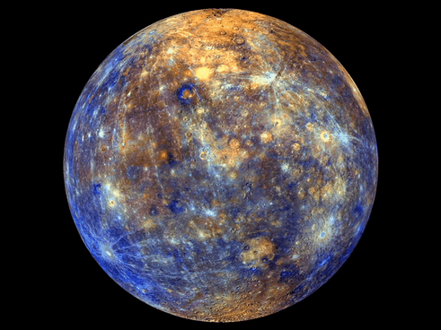
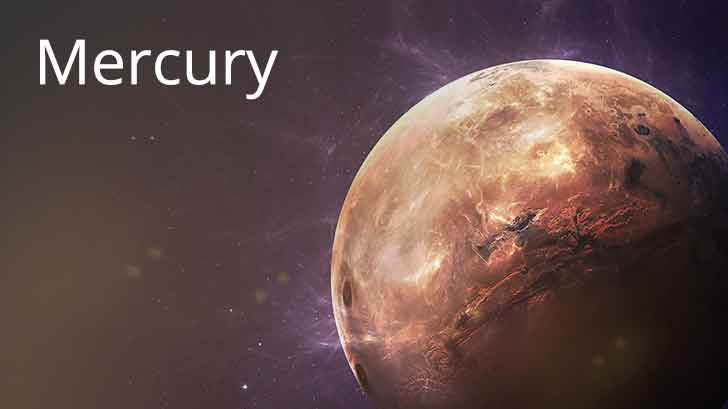

mercury
-
Mercury is the smallest planet in the Solar System and the closest to the Sun. Its orbit around the Sun takes
87.97 Earth days, the shortest of all the Sun's planets. It is named after the Roman god Mercurius (Mercury),
god of commerce, messenger of the gods, and mediator between gods and mortals, corresponding to the Greek god
Hermes . Like Venus, Mercury orbits the Sun within Earth's orbit as an inferior planet, and its apparent
distance from the Sun as viewed from Earth never exceeds 28°. This proximity to the Sun means the planet can only
be seen near the western horizon after sunset or the eastern horizon before sunrise, usually in twilight. At this
time, it may appear as a bright star-like object but is often far more difficult to observe than Venus. From Earth,
the planet telescopically displays the
complete range of phases, similar to Venus and the Moon, which recurs over its synodic period of approximately 116 days.
-

-

-
Mercury rotates in a way that is unique in the Solar System. It is tidally locked with the Sun in a 3:2 spin–orbit
resonance, meaning that relative to the fixed stars, it rotates on its axis exactly three times for every two
revolutions it makes around the Sun. As seen from the Sun, in a frame of reference that rotates with the
orbital motion, it appears to rotate
only once every two Mercurian years. An observer on Mercury would therefore see only one day every two Mercurian years.
The earth and other planets revolve around it and it furnishes light, heat and energy for our solar system.
It is 13, 92,520 km in diameter and 14, 95, 97,900 km distant from the earth. Sun rays travel at a speed of about
300,000 km per second and take. Now it has been proven that solar system is continously moving. So we don't have
the exact size of the solar system